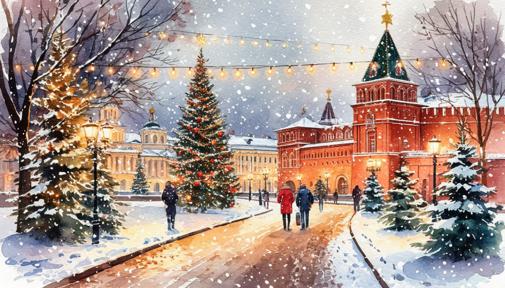

Новогодняя история.

Даты тура: с 30 декабря 2025 года (вт) по 3 января 2026 года (сб)
Стоимость тура*:
- 28 800 р. - взрослый
- 28 800 р. - пенсионеры/школьники
- 33 800 р./чел - одноместное размещение
- * стоимость действительна до 01.11.2025 г. по акции "раннее бронирование"
По программе:
- - Обзорная автобусно-пешеходная экскурсия «Волшебство новогоднего Минска»
- - Новогодний банкет (за доп. плату)
- - Новогодняя экскурсия в Сулу (за доп. плату)
- - Обзорная экскурсия по г. Лида
- - Экскурсия в Лидском замке
Программа тура:
1 день:
- 13-00- выезд из Костромы от ТРЦ "РИО" (Ул. Магистральная, 20), правый угол от центрального входа
2 день:
- Прибытие в Минск. Встреча с гидом.
- Завтрак в кафе города.
- Обзорная автобусно-пешеходная экскурсия «Волшебство новогоднего Минска» - столице Республики Беларусь позволит познакомиться с основными достопримечательностями одного из самых красивых европейских городов, поражающего любого путешественника особым домашним уютом и теплотой, потрясающей архитектурой, широтой улиц и проспектов. Особое впечатление производят празднично украшенные улицы и проспекты, над оформлением которых ежегодно трудится целая команда дизайнеров. Вы увидите самые важные достопримечательности: Троицкое предместье - исторический центр старого города со старинными, будто игрушечными домиками XVIII-XIX веков, Верхний город с Ратушей и кафедральным собором Святого Духа, Костел Св.Девы Марии, торговые ряды. Вас поразят живописные изогнутые улочки, уютные кафе, дома ремесленников, галереи художников. Особое впечатление произведут архитектурные памятники исторической застройки старого города с множеством малых форм, возле которых обязательно надо сделать фото на память.
- Динамичный современный облик Минска. Уникальная знаковая архитектура главной улицы - памятника градостроительного искусства XX века - проспекта Независимости. Площадь Победы и Национальная библиотека, включенные в список наиболее выдающихся архитектурных строений современности.
- Обед в кафе города.
- Переезд в Барановичи (150 км.). Размещение в отеле.
За дополнительную плату (по желанию):
- - Новогодний банкет (БРОНИРОВАНИЕ СТРОГО ЗАРАНЕЕ) Стоимость уточняется.
3 день:
- Поздний завтрак в отеле
- Свободное время ИЛИ
- - для желающих за доп. плату: Новогодняя экскурсия в Сулу - 2000 руб./чел. (при наборе группы от 20 чел.)
- Отправление в Сулу. Барановичи-Сула (105 км.). Усадебно-парковый комплекс “Парк истории Сула”, созданный на месте усадьбы шляхетского рода Ленских, покоряет красками природы и старинными постройками, получившими после реставрации современное назначение, но и сохранившими обаяние прежних архитектурных форм.
- Интерактивная Новогодняя экскурсия + обед. У въезда в усадьбу нас встретят с музыкой конный эскорт всадников в исторических костюмах. А затем начинается наше путешествие сквозь века.
- Вы осмотрите сложенный из тесанного бутового камня Сульский замок; посетите оружейную мастерскую; музей Ленских, осмотрите усадебный дома и часовню в виде античного храма-ротонды, и многое другое увлекательное и завораживающее ждет вас на экскурсии.
- Множество колоритных построек на обширной территории позволит Вам сделать прекрасные фотографии на память об этом путешествии в прошлое.
- А завершится наше путешествие обедом. (Обед в этот день программой тура предусмотрен только на экскурсии в Суле).
- Свободное время на фотографирование.
- Возвращение в отель.
4 день:
- Завтрак в отеле. Освобождение номеров.
- Переезд в Лиду (120 км.). На протяжении веков город Лида принадлежал различным магнатам, и даже некоторое время был во владении… хана Золотой Орды Тохтомыша.
- Знакомство с городом, обзорная экскурсия. Город основан в 1323 году великим князем Гедимином. С конца XIV и до начала XVI века Лида - великокняжеский город из первой пятерки городов Великого княжества Литовского. Здесь сохранился средневековый замок – замечательный памятник оборонительного зодчества XIV века.
- Экскурсия в Лидском замке. Лидский замок – древнейший на территории Беларуси, принадлежавший литовским великим князьям и польскому королю. В ходе экскурсии вы посетите замковый двор, башню и боевые галереи, услышите увлекательные истории этого древнего замка.
- Обед в кафе города
- Отправление домой
5 день:
Прибытие в Кострому в первой половине дня (ориентировочно)
В стоимость тура входит:
- - проживание в гостинице*
- * Гостиница "Горизонт" 3*
- - питание: 3 завтрака + 2 обеда
- - услуги гида-экскурсовода
- - экскурсионная программа
- - автобусное обслуживание по программе тура
Дополнительно оплачиваются (по желанию):
- - Новогодний банкет, для желающих. Стоимость и программа уточняются (Строго при бронировании тура)
- - Новогодняя экскурсия в Сулу - 2000 руб./чел. (при наборе группы от 20 чел.)
Стоимость тура не зафиксированы и могут быть изменены в большую или меньшую сторону в зависимости от уровня спроса в любой момент.
Время начала экскурсий и их порядок указано ориентировочно.
Фирма-исполнитель оставляет за собой право замены экскурсий без уменьшения общего объема экскурсионной программы.
По вопросам бронирования обращайтесь: